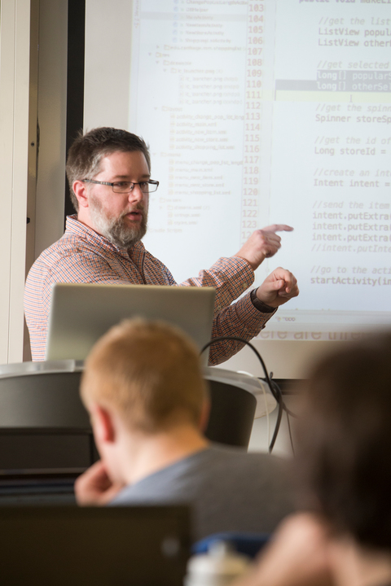

Mark Mahoney's Resume
Mark Mahoney, Ph.D.
10917 Huron Drive
Spring Grove, IL 60081
mmahoney@carthage.edu
(847)912-2642
Professional Experience in Higher Education
- Chair of the Computer Science Department and Associate Professor of Computer Science at Carthage College (2006-present)
- I led the growth of the department from an average of about 30 computer science majors to our current level of about 90 majors.
- Assistant Professor of Computer Science at Carthage College (2002-2006)
- Adjunct Professor of Computer Science Department at Roosevelt University (2000-2002)
Other Work Experience
- Illinois Institute of Technology, Chicago, IL. Ph.D., Computer Science, 2008
- Dissertation: Handling Reactive Crosscutting Concerns with Aspect Oriented Modeling, State Machines, and Scenarios
Advisor: Dr. Tzilla Elrad
- Illinois Institute of Technology, Chicago, IL. M.S., Computer Science, 2002
- Roosevelt University, Chicago, IL. B.A., Computer Science, 1999
Teaching
Courses Taught at Carthage College:
- CSC 1110: Principles of Computer Science I
- CSC 1120: Principles of Computer Science II
- CSC 2560: Data Structures and Algorithms
- CSC 3050: Object Oriented Programming with Design Patterns
- CSC 3210: Computing Paradigms
- CSC 3410: Database Design and Development
- CSC 3600: Data Communications
- CSC 3730: Operating Systems
- CSC 4000: Senior Seminar
- CSC 4350: Software Design and Development (Writing Intensive)
- CSC 4710: Topics: Web Services
- CSC 4710: Topics: Agile Software Development
- CSC 4710: Topics: Web 2.0 Software Development
- CSC 400T: Topics: Mobile App Development
- CSC 4900: Research in Computer Science
- ISYS 311: E-Commerce
- ISYS 345: Information Systems Theory and Practice
- ISYS 425: Systems Analysis
- ISYS 490: Senior Seminar
- HER 103: Western Heritage I- Citizenship and Justice
- ESNS 325: Entrepreneurial Studies in the Natural Sciences- Commercial Technologies

Research
`Personal:
- Mark Mahoney, “Version Control Optimized for Teaching and Learning (Video)” The Future Programming Workshop associated with SPLASH 2014 Portland, OR. October 2014.
- Mark Mahoney, “The Storyteller Version Control System - Tackling Version Control, Code Comments, and Team Learning” The SPLASH Demonstration Track SPLASH 2012 Tucson, AZ October, 2012.
- Mark Mahoney, Cassandra Kawell, Isaac Rothenbaum, “A Tool to Create Stories About Software Evolution” The 21st Annual Wisconsin Space Conference LaCrosse, WI. August, 2011.
- Mark Mahoney, “Telling Stories about Software Evolution” Emerging Results Workshop, Agile 2011 Salt Lake City, UT. August, 2011.
- Mark Mahoney, Tzilla Elrad. “A Pattern Story for Combining Crosscutting Concern State Machines” Transactions on Pattern Languages of Programming Volume I, pp.192-206. February, 2010.
- Mark Mahoney “Software Evolution and the Moving Picture Metaphor” Onward! held in conjunction with OOPSLA 2009 Orlando, FL. October, 2009.
- Mark Mahoney, Tzilla Elrad. “A Pattern for Monitoring Scenarios to Handle State Based Crosscutting Concerns” Pattern Languages of Programs Conference held in conjunction with OOPSLA 2008 Nashville, TN. October, 2008.
- Mark Mahoney, Tzilla Elrad. “Using Scenario Monitoring to Address State Based Crosscutting Concerns”, Proceedings of the Twentieth International Conference on Software Engineering and Knowledge Engineering (SEKE '08) San Francisco, CA. July, 2008.
- Mark Mahoney, Tzilla Elrad. “A Pattern Story for Aspect-Oriented State Machines”, Pattern Languages of Programs Monticello IL. September, 2007.
- Mark Mahoney, Tzilla Elrad. “A Pattern Based Approach to Aspect-Orientation for State Based Systems”, Workshop on Best Practices in Applying Aspect-Oriented Software Development (BPAOSD ' 07) at the Sixth International Conference on Aspect-Oriented Software Development (AOSD 2007) Vancouver, BC. March, 2007.
- Mark Mahoney, Tzilla Elrad. “Generating Code from Scenario and State Based Models to Address Crosscutting Concerns”, 6th International Workshop on Scenarios and State Machines Proceedings of the 29th International Conference on Software Engineering + Workshops, Minneapolis, MN. May, 2007.
- Mark Mahoney, Tzilla Elrad, “Distributing Statecharts to Handle Pervasive Crosscutting Concerns”, Building Software for Pervasive Computing Workshop at OOPSLA '05 San Diego, CA., October, 2005.
- Mark Mahoney, Tzilla Elrad, “Weaving Crosscutting Concerns into Live Sequence Charts Using the Play Engine”, 7th International Workshop on Aspect-Oriented Modeling held in conjunction with the 8th International Conference on Model Driven Engineering Languages and Systems (MoDELS'05) Montego Bay, Jamaica October, 2005.
- Mark Mahoney, Tzilla Elrad, “Modeling Platform Specific Attributes of a System as Crosscutting Concerns using Aspect-Oriented Statecharts and Virtual Finite State Machines”, the 6th International Workshop on Aspect-Oriented Modeling as part of AOSD’05 Chicago, IL. March, 2005.
- Mark Mahoney, Atef Bader, Tzilla Elrad, Omar Aldawud, “Using Aspects to Abstract and Modularize Statecharts”, The 5th Aspect-Oriented Modeling Workshop in Conjunction with UML 2004 Lisbon, Portugal October, 2004.
Patents
U.S. Patent number 6,760,319 “Fixed Frequency Interference Avoidance Enhancement” (Co-inventors: L. Gerten, K. Harnist, C. Harmke). Issued July 6, 2004.
MOST IMPORTANTLY I AM A GLADIATOR